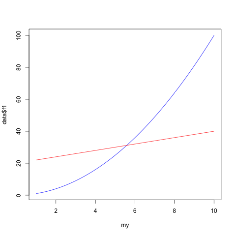

Estruturas de Dados - Aula 1
Table of Contents
1 O Curso
- Sobre o que é o curso?
- Algoritmos
- Análise de algorítmos
- Estruturas de dados
- Sobre o que não é o curso?
- Ensinar a programar?
- Perfil da turma?
- Aulas
- Avaliação
- Estudo em grupo!
- Trabalhos digitais (implementações)
Motivação:
Recursos:
2 Algorítmos
1448 Gutenberg -> imprensa -> revolução industrial -> algarismos romanos -> simples contas eram complexas
(format nil "~@r" 1448)
MCDXLVIII
AD 600 India, sistema decimal -> imprensa -> Al Khwarizmi em árabe, métodos adição/sub/mult/div -> algorithms -> Leste/Europa
3 Fibonnaci
Al Khwarizmi’s work -> divulgado por 15th century Italian mathematician Leonardo Fibonacci.
Mais famoso trabalho de Fibonacci -> Sequencia de Fibonacci.
0,1,1,2,3,5,8,13,21,34,…
Uso: biology, demography, art, architecture, music…
Cresce tão rápido quando potências de 2. \(F_n \approx 2^{0.694n}\). Como saber o valor preciso de \(F_{100}\) ou \(F_{200}\)?
(defun fib1 (n) (cond ((= n 0) 0) ((= n 1) 1) (t (+ (fib1 (- n 1)) (fib1 (- n 2)))))) (fib1 10)
Perguntas:
- Está correto?
- Quanto tempo demora para processar em função da entrada?
- Podemos melhorar?
Respostas:
- Fácil, pela definição da sequência Fn
- Seja T(n) o número de passos necessários para computar
(fib1 n).
Logo \(T(n) \geq F(n)\). Mas quanto ruim é isso? Seja
\[ T(200) \geq F200 \geq 2^{138} \]dado que \(F(n) \approx 2^{0.694n}\).
Imagine um computador capaz de executar 40 trilhões de passos por segundo (fib1 200) demoraria 292 seconds
(format nil "~r" 40000000000000)
(log 40000000000000 2)
Lembrando: 2x / 2y = 2(x - y)
(- 138 v)
Moore’s law fib1(n) é proporcional à 2(0.694n) ≈ (1.6)n Fn+1 demora 1.6 * o tempo de fn Logo se conseguirmos computar hoje F100 podemos no ano que vem computar F101!
Em anos:
(/ (expt 2 92) (* 60.0 60 24 360))
3.1 Solução Linear
Solução recursiva repete computações -> vide Tree
(defun fib2 (n) (labels ((calc-fib (n a b) (if (= n 0) a (calc-fib (- n 1) b (+ a b))))) (calc-fib n 0 1))) (fib2 10)
Ou usando repetição ao invés de recursão:
(defun fib3 (n) (cond ((= n 0) 0) ((= n 1) 1) (t (loop repeat (- n 1) for x = 0 then y for y = 1 then z for z = (+ x y) finally (return z))))) (fib3 10)
(defun fib4 (n) (do* ((count 1 (+ 1 count)) (x 0 y) (y 1 z) (z (+ x y) (+ x y))) ((>= count (- 10 1)) z))) (fib4 10)
- Corretos?
- Quanto tempo?
- Pode melhorar?
Respostas:
- ?
- Linear
- Sim. Vide exercícios
3.2 Análise mais cuidadosa
- Passos básicos tomam tempo constante?
- armazenar, aritmética simples, comparação, chamada de função etc?
- Fibonacci nums pequenos podem ser armazenados em 32bits
- Fibonacci grandes requerem na ordem de 0.694n bits
- aritimética com nums grandes é mais custosa?!
- custo da adição é proporcional ao número de algarismos
- fib1 performance é Fn agora então seria nFn
- fib2 agora seria proporcional a n2
4 Notação Big O
p.15: Let \(f(n)\) and \(g(n)\) be functions from positive integers to positive reals. We say \(f = O(g)\) (which means that "f grows no faster than g") if there is a constant \(c > 0\) such that \(f(n) \leq c g (n)\) – Highlighted oct 16, 2011
\(F = O(g)\) é como dizer \(F \leq g\).
f1 <- function(n) n*n f2 <- function(n) 2*n + 20 my <- seq(1,10, by = 0.1) data <- data.frame(serie = my, f1 = f1(my), f2 = f2(my)) plot(my,data$f1, type="l", col="blue") lines(my,data$f2, type="l", col="red")
